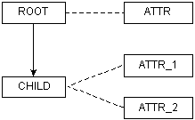
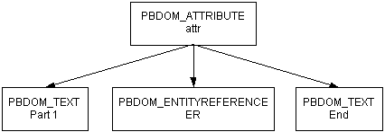
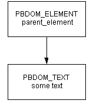

This section describes the PBDOM_OBJECT class and all of the classes that descend from it:
For detailed descriptions of PBDOM class methods, see the PowerBuilder Extension Reference.
The PBDOM_OBJECT class represents any node in an XML node tree and serves as the base class for specialized PBDOM classes that represent specific node types. The DOM class that corresponds to PBDOM_OBJECT is the Node object. PBDOM_OBJECT contains all the basic features required by derived classes. A node can be an element node, a document node, or any of the node types listed above that derive from PBDOM_OBJECT.
The PBDOM_OBJECT base class has the following methods:
The PBDOM_OBJECT class is similar to a virtual class in C++ in that it is not expected to be directly instantiated and used. For example, although a PBDOM_OBJECT can be created using the PowerScript CREATE statement, its methods cannot be used directly:
PBDOM_OBJECT pbdom_objThe third line of code above throws an exception because it attempts to directly access the SetName method for the base class PBDOM_OBJECT. A similar implementation is valid, however, when the SetName method is accessed from a derived class, such as PBDOM_ELEMENT:
pbdom_obj = CREATE PBDOM_OBJECT
pbdom_obj.SetName("VIRTUAL_PBDOM_OBJ") //exception!
PBDOM_OBJECT pbdom_obj
pbdom_obj = CREATE PBDOM_ELEMENT
pbdom_obj.SetName ("VIRTUAL_PBDOM_OBJ")
The PBDOM_OBJECT class can be used as a placeholder for an object of a derived class:
PBDOM_DOCUMENT pbdom_doc
PBDOM_OBJECT pbdom_obj
pbdom_doc = CREATE PBDOM_DOCUMENT
pbdom_doc.NewDocument ("", "", &
"Root_Element_From_Doc_1", "", "")
pbdom_obj = pbdom_doc.GetRootElement
pbdom_obj.SetName &
("Root_Element_From_Doc_1_Now_Changed")
The instantiated PBDOM_OBJECT pbdom_obj is assigned to a PBDOM_DOCUMENT object, which holds the return value of the GetRootElement method. Here, pbdom_obj holds a reference to a PBDOM_ELEMENT and can be operated on legally like any object of a class derived from PBDOM_OBJECT.
A PBDOM_OBJECT can be created as a self-contained object independent of any document or parent PBDOM_OBJECT. Such a PBDOM_OBJECT is known as a standalone object. For example:
PBDOM_ELEMENT pbdom_elem_1
pbdom_elem_1 = Create PBDOM_ELEMENT
pbdom_elem_1.SetName("pbdom_elem_1")
pbdom_elem_1 is instantiated in the derived class PBDOM_ELEMENT using the Create keyword. The SetName method can then be invoked from the pbdom_elem_1 object, which is a standalone object not contained within any document.Standalone objects can perform any legal PBDOM operations, but standalone status does not give the object any special advantages or disadvantages.
A PBDOM_OBJECT can be assigned a parent by appending it to another standalone PBDOM_OBJECT, as in the following example:
PBDOM_ELEMENT pbdom_elem_1
PBDOM_ELEMENT pbdom_elem_2
pbdom_elem_1 = Create PBDOM_ELEMENT
pbdom_elem_2 = Create PBDOM_ELEMENT
pbdom_elem_1.SetName("pbdom_elem_1")
pbdom_elem_2.SetName("pbdom_elem_2")
pbdom_elem_1.AddContent(pbdom_elem_2)
Two PBDOM_ELEMENT objects, pbdom_elem_1 and pbdom_elem_2, are instantiated. The pbdom_elem_2 object is appended as a child object of pbdom_elem_1 using the AddContent method. In this example, neither pbdom_elem_1 nor pbdom_elem_2 is owned by any document, and the pbdom_elem_1 object is still standalone. If pbdom_elem_1 were assigned to a parent PBDOM_OBJECT owned by a document, pbdom_elem_1 would cease to be a standalone object.
The PBDOM_DOCUMENT class derives from PBDOM_OBJECT and represents an XML DOM document. The PBDOM_DOCUMENT methods allow access to the root element, processing instructions, and other document-level information.
In addition to the methods inherited from PBDOM_OBJECT, the PBDOM_DOCUMENT class has the following methods:
The PBDOM_DOCTYPE class represents the document type declaration object of an XML DOM document. The PBDOM_DOCTYPE methods allow access to the root element name, the internal subset, and the system and public IDs.
In addition to the methods inherited from PBDOM_OBJECT, the PBDOM_DOCTYPE class has the following methods:
The PBDOM_ELEMENT represents an XML element modeled in PowerScript. The PBDOM_ELEMENT methods allow access to element attributes, children, and text.
In addition to the methods inherited from PBDOM_OBJECT, the PBDOM_ELEMENT class has the following methods:
In PBDOM, an XML element's attributes are not its children. They are properties of elements rather than having a separate identity from the elements they are associated with.
Consider the following simple XML document :
<root attr="value1">
<child attr_1="value1" attr_2="value2"/>
</root>
The equivalent PBDOM tree is shown in Figure 14-2:

The solid line joining root with child represents a parent-child relationship. The dashed lines represent a "property-of" relationship between an attribute and its owner element.
The PBDOM_ELEMENT content management methods do not apply to PBDOM_ATTRIBUTE objects. There are separate get, set, and remove methods for attributes.
Because they are not children of their owner elements, PBDOM does not consider attributes as part of the overall PBDOM document tree, but they are linked to it through their owner elements.
An attribute can contain child objects (XML text and entity reference nodes), so an attribute forms a subtree of its own.
Because an element's attributes are not considered its children, they have no sibling relationship among themselves as child objects do. In the sample XML document and in Figure 14-2, attr_1 and attr_2 are not siblings. The order of appearance of attributes inside its owner element has no significance.
In PBDOM, an XML element's attribute is set using the PBDOM_ELEMENT SetAttribute and SetAttributes methods. These methods always attempt to create new attributes for the PBDOM_ELEMENT and attempt to replace existing attributes with the same name and namespace URI.
If the PBDOM_ELEMENT already contains an existing attribute with the same name and namespace URI, these methods first remove the existing attribute and then insert a new attribute into the PBDOM_ELEMENT. Calling the SetAttribute method can cause a PBDOM_ATTRIBUTE (representing an existing attribute of the PBDOM_ELEMENT) to become detached from its owner PBDOM_ELEMENT.
For example, consider the following element:
<an_element an_attr="some_value"/>
If a PBDOM_ELEMENT object pbdom_an_elem represents the element an_element and the following statement is issued, the method first attempts to create a new attribute for the an_element element:
pbdom_an_elem.SetAttribute("an_attr", "some_other_value")
Then, because an_element already contains an attribute with the name an_attr, the attribute is removed. If there is an existing PBDOM_ATTRIBUTE object that represents the original an_attr attribute, this PBDOM_ATTRIBUTE is detached from its owner element (an_element).
For more information about attributes and namespaces, see "XML namespaces".
The PBDOM_ATTRIBUTE class represents an XML attribute modeled in PowerScript. The PBDOM_ATTRIBUTE methods allow access to element attributes and namespace information.
In addition to the methods inherited from PBDOM_OBJECT, the PBDOM_ATTRIBUTE class has the following methods:
A PBDOM_ATTRIBUTE contains a subtree of child PBDOM_OBJECTs. The child objects can be a combination of PBDOM_TEXT and PBDOM_ENTITYREFERENCE objects.
The following example produces a PBDOM_ELEMENT named elem that contains a PBDOM_ATTRIBUTE named attr:
PBDOM_ATTRIBUTE pbdom_attr
PBDOM_TEXT pbdom_txt
PBDOM_ENTITYREFERENCE pbdom_er
PBDOM_ELEMENT pbdom_elem
pbdom_elem = Create PBDOM_ELEMENT
pbdom_elem.SetName ("elem")
pbdom_attr = Create PBDOM_ATTRIBUTE
pbdom_attr.SetName("attr")
pbdom_attr.SetText("Part 1 ")
pbdom_txt = Create PBDOM_TEXT
pbdom_txt.SetText (" End.")
pbdom_er = Create PBDOM_ENTITYREFERENCE
pbdom_er.SetName("ER")
pbdom_attr.AddContent(pbdom_er)
pbdom_attr.AddContent(pbdom_txt)
pbdom_elem.SetAttribute(pbdom_attr)
The element tag in the XML looks like this:
<elem attr="Part 1 &ER; End.">
In Figure 14-3, the arrows indicate a parent-child relationship between the PBDOM_ATTRIBUTE and the other PBDOM_OBJECTs:

A PBDOM_ATTRIBUTE generally always contains at least one PBDOM_TEXT child that might contain an empty string. This is the case unless the RemoveContent method has been called to remove all contents of the PBDOM_ATTRIBUTE.
The following examples show how a PBDOM_TEXT object with an empty string can become the child of a PBDOM_ATTRIBUTE.
Example 1 The following example uses the PBDOM_ELEMENT SetAttribute method. The name of the PBDOM_ATTRIBUTE is set to attr but the text value is an empty string. The PBDOM_ATTRIBUTE will have one child PBDOM_TEXT that will contain an empty string:
PBDOM_DOCUMENT pbdom_doc
PBDOM_ATTRIBUTE pbdom_attr
PBDOM_OBJECT pbdom_obj_array[]
try
pbdom_doc = Create PBDOM_DOCUMENT
pbdom_doc.NewDocument("root")
// Note that the name of the attribute is set to
// "attr" and its text value is the empty string ""
pbdom_doc.GetRootElement().SetAttribute("attr", "")
pbdom_attr = &
pbdom_doc.GetRootElement().GetAttribute("attr")
MessageBox ("HasChildren", &
string(pbdom_attr.HasChildren()))
catch(PBDOM_EXCEPTION pbdom_except)
MessageBox ("PBDOM_EXCEPTION", &
pbdom_except.GetMessage())
end try
When you use the SaveDocument method to render pbdom_doc as XML, it looks like this:
<root attr="" />
Example 2 The following example creates a PBDOM_ATTRIBUTE and sets its name to attr. No text value is set, but a PBDOM_TEXT object is automatically created and attached to the PBDOM_ATTRIBUTE. This is the default behavior for every PBDOM_ATTRIBUTE created in this way:
PBDOM_DOCUMENT pbdom_doc
PBDOM_ATTRIBUTE pbdom_attr
try
pbdom_doc = Create PBDOM_DOCUMENT
pbdom_doc.NewDocument("root")
// Create a PBDOM_ATTRIBUTE and set its name to "attr"
pbdom_attr = Create PBDOM_ATTRIBUTE
pbdom_attr.SetName("attr")
pbdom_doc.GetRootElement().SetAttribute(pbdom_attr)
MessageBox ("HasChildren", &
string(pbdom_attr.HasChildren()))
catch(PBDOM_EXCEPTION pbdom_except)
MessageBox ("PBDOM_EXCEPTION", &
pbdom_except.GetMessage())
end try
When you call the SetText method (or any of the other Set* methods except SetNamespace), the default PBDOM_TEXT is replaced by a new PBDOM_TEXT. If you call the SetContent method, you can replace the default PBDOM_TEXT by a combination of PBDOM_TEXT and PBDOM_ENTITYREFERENCE objects.
The PBDOM_ENTITYREFERENCE class defines behavior for an XML entity reference node. It is a simple class intended primarily to help you insert entity references within element nodes as well as attribute nodes.When the PBDOM_BUILDER class parses an XML document and builds up the DOM tree, it completely expands entities as they are encountered in the DTD. Therefore, immediately after a PBDOM_DOCUMENT object is built using any of the PBDOM_BUILDER build methods, there are no entity reference nodes in the resulting document tree.
A PBDOM_ENTITYREFERENCE object can be created at any time and inserted into any document whether or not there is any corresponding DOM entity node representing the referenced entity in the document.
The PBDOM_ENTITYREFERENCE class has only methods that are inherited from PBDOM_OBJECT.
The PBDOM_CHARACTERDATA class derives from PBDOM_OBJECT and represents character-based content (not markup) within an XML document. The PBDOM_CHARACTERDATA class extends PBDOM_OBJECT with methods specifically designed for manipulating character data.
In addition to the methods inherited from PBDOM_OBJECT, the PBDOM_CHARACTERDATA class has the following methods:
The PBDOM_CHARACTERDATA class is the parent class of three other PBDOM classes:
The PBDOM_CHARACTERDATA class, like its parent class PBDOM_OBJECT, is a "virtual" class (similar to a virtual C++ class) in that it is not expected to be directly instantiated and used. For example, creating a PBDOM_CHARACTERDATA with the CREATE statement is legal in PowerScript, but operating on it directly by calling its SetText method is not. The last line in this code raises an exception:
PBDOM_CHARACTERDATA pbdom_chrdata
pbdom_chrdata = CREATE PBDOM_CHARACTERDATA
pbdom_chrdata.SetText("character string") //exception!
In this example, pbdom_chrdata is declared as a PBDOM_CHARACTERDATA but is instantiated as a PBDOM_TEXT. Calling SetText on pbdom_chrdata is equivalent to calling the PBDOM_TEXT SetText method:
PBDOM_CHARACTERDATA pbdom_chrdata
pbdom_chrdata = CREATE PBDOM_TEXT
pbdom_chrdata.SetText("character string")
The PBDOM_TEXT class derives from PBDOM_CHARACTERDATA and represents a DOM text node in an XML document.
The PBDOM_TEXT class has no methods that are not inherited from PBDOM_OBJECT or PBDOM_CHARACTERDATA.
PBDOM_TEXT objects are commonly used to represent the textual content of a PBDOM_ELEMENT or a PBDOM_ATTRIBUTE. Although PBDOM_TEXT objects are not delimited by angle brackets, they are objects and do not form the value of a parent PBDOM_ELEMENT.
A PBDOM_TEXT object represented in graphical form in a PBDOM tree is a leaf node and contains no child objects. For example, Figure 14-4 represents the following PBDOM_ELEMENT:
<parent_element>some text</parent_element>

The arrow indicates a parent-child relationship.
When an XML document is first parsed, if there is no markup inside an element's content, the text within the element is represented as a single PBDOM_TEXT object. This PBDOM_TEXT object is the only child of the element. If there is markup, it is parsed into a list of PBDOM_ELEMENT objects and PBDOM_TEXT objects that form the list of children of the element.
For example, parsing the following XML produces one PBDOM_ELEMENT that represents <element_1> and one PBDOM_TEXT that represents the textual content Some Text:
<root>
<element_1>Some Text</element_1>
</root>
The <element_1> PBDOM_ELEMENT has the PBDOM_TEXT object as its only child.
Consider this document:
<root>
<element_1>
Some Text
<element_1_1>Sub Element Text</element_1_1>
More Text
<element_1_2/>
Yet More Text
</element_1>
</root>
Parsing this XML produces a PBDOM_ELEMENT that represents <element_1> and its five children:
You can create adjacent PBDOM_TEXT objects that represent the contents of a given element without any intervening markup. For example, suppose you start with this document:
<root>
<element_1>Some Text</element_1>
</root>
Calling AddContent("More Text") on the element_1 PBDOM_ELEMENT produces the following result:
<root>
<element_1>Some TextMore Text</element_1>
</root>
There are now two PBDOM_TEXT objects representing "Some Text" and "More Text" that are adjacent to each other. There is nothing between them, and there is no way to represent the separation between them.
The separation of adjacent PBDOM_TEXT objects does not usually persist between DOM editing sessions. When the document produced by adding "More Text" shown in the preceding example is reopened and reparsed, only one PBDOM_TEXT object represents "Some TextMore Text".
The PBDOM_CDATA class derives from PBDOM_TEXT and represents an XML DOM CDATA section.
The PBDOM_CDATA class has no methods that are not inherited from PBDOM_OBJECT or PBDOM_CHARACTERDATA.
You can think of a PBDOM_CDATA object as an extended PBDOM_TEXT object. A PBDOM_CDATA object is used to hold text that can contain characters that are prohibited in XML, such as < and &. Their primary purpose is to allow you to include these special characters inside a large block of text without using entity references.
This example contains a PBDOM_CDATA object:
<some_text>
<![CDATA[ (x < y) & (y < z) => x < z ]]>
</some_text>
To express the same textual content as a PBDOM_TEXT object, you would need to write this:
<some_text>
(x < y) & (y < z) => x < z
</some_text>
Although the PBDOM_CDATA class is derived from PBDOM_TEXT, a PBDOM_CDATA object cannot always be inserted where a PBDOM_TEXT can be inserted. For example, a PBDOM_TEXT object can be added as a child of a PBDOM_ATTRIBUTE, but a PBDOM_CDATA object cannot.
The PBDOM_COMMENT class represents a DOM comment node within an XML document. The PBDOM_COMMENT class is derived from the PBDOM_CHARACTERDATA class.
The PBDOM_COMMENT class has no methods that are not inherited from PBDOM_OBJECT or PBDOM_CHARACTERDATA.
Comments are useful for annotating parts of an XML document with user-readable information.
When a document is parsed, any comments found within the document persist in memory as part of the DOM tree. A PBDOM_COMMENT created at runtime also becomes part of the DOM tree.
An XML comment does not usually form part of the content model of a document. The presence or absence of comments has no effect on a document's validity, and there is no requirement that comments be declared in a DTD.
The PBDOM_PROCESSINGINSTRUCTION class represents an XML processing instruction (PI). The PBDOM_PROCESSINGINSTRUCTION methods allow access to the processing instruction target and its data. The data can be accessed as a string or, where appropriate, as name/value pairs.
The actual processing instruction of a PI is a string. This is so even if the instruction is cut up into separate name="value" pairs. PBDOM, however, does support such a PI format. If the PI data does contain these pairs, as is commonly the case, then PBDOM_PROCESSINGINSTRUCTION parses them into an internal list of name/value pairs.
In addition to the methods inherited from PBDOM_OBJECT, the PBDOM_PROCESSINGINSTRUCTION class has the following methods: